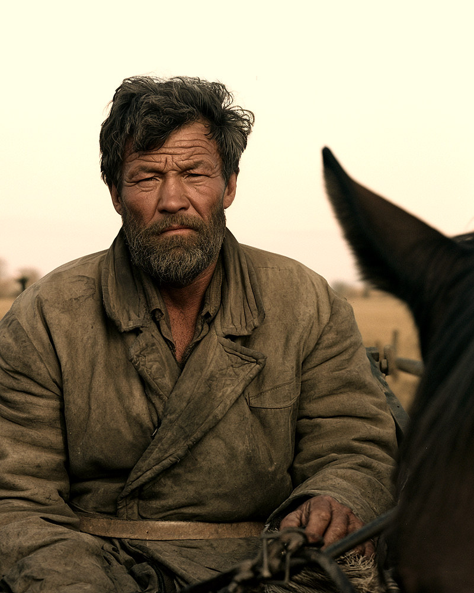
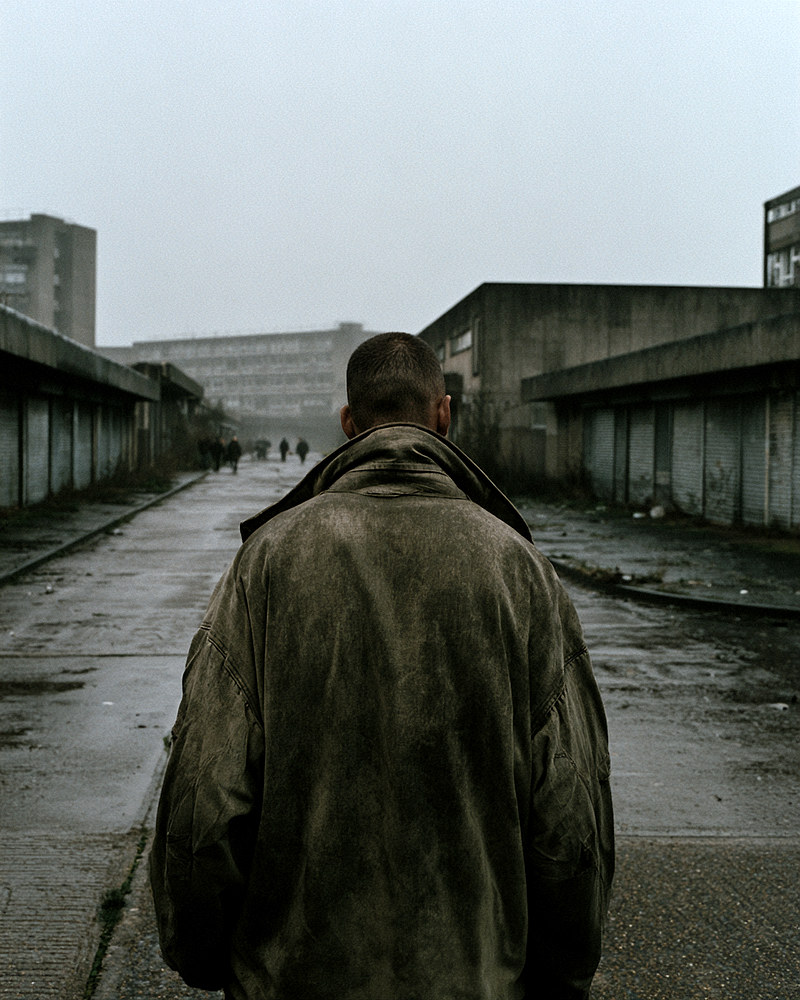
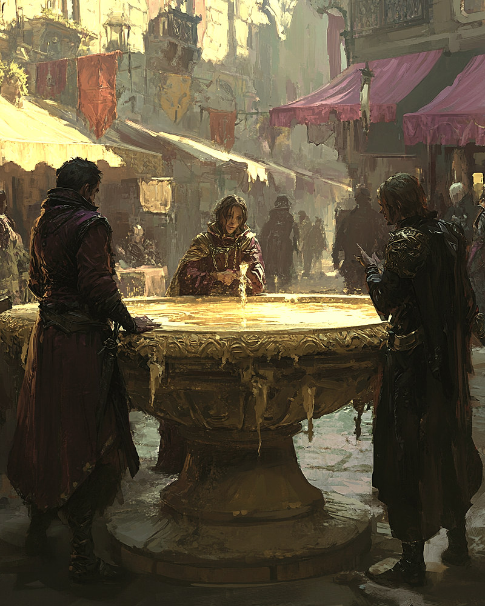
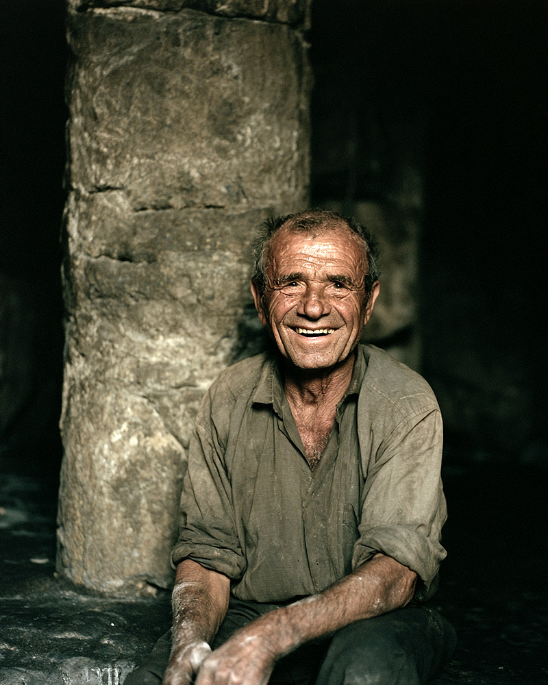

Characters
The road, the estate, and the cave.
Introductions only: who these people are when you meet them — no fates, no secrets, and nothing the book would rather tell you itself.
The Road
A goodbye at a gate, a cart, a crossing, and the brightest gates left in the world.
Daniel Mercer
The man who checks
Quiet, methodical, and constitutionally incapable of mistaking passed for correct. Daniel has spent eleven years finding the gap between the two, and the Bank has asked for him by name. He notices things he isn't meant to notice, files them away — and asks the mildest questions in the world.
“It is always there, and it's never where you expect it, and the more elegant the system the better it hides.”
Ruth
The one who stays
Steady-eyed and unsentimental, the keeper of the plan and the passbook — two lines of careful handwriting, a fortnight at a time. Ruth talked Daniel into going because the sums said to, and she hates it, and both of those things are entirely true at once.
“Say you know it properly.”

Ray Tanner
The courier
One route out, one route back, more times than he can count. Tanner delivers sealed cases between the world's surviving data centres with the flat calm of a man nothing has surprised in decades — except the dolphins. The dolphins get him every single crossing.
“Roughly's the best anyone honest will promise you, this route.”
Martin Pell
The true believer
Young, eager, and on his first recruitment run. Pell loves the Bank the way other men love a horse — with his hand flat on its flank. He rehearses his tours, glances to see whether they're working, and believes, absolutely and sincerely, that the place he serves is a good thing to be for.
“Three weeks and you'll be complaining about the drinks vending machines like everyone else.”
The Estate
Grey days, bright evenings, and a board that everybody watches.

Vernon
The man the wanting left
Better at the games than almost anyone, and entirely indifferent to them. Somewhere along the way the wanting went out of Vernon, quietly, without his marking the day it left — which makes him the one person on the estate who notices when something doesn't add up. He is very good at not doing anything with the things he notices. For now.
“We didn't clear this round. It just says we did.”
Loretta
The name the board forgets
Quick, wry, anxious at the edges and quietly funny underneath — and hungry, in a way the games were built to feed and never quite do. Loretta checks the standings a dozen times a night, climbs, and is happy for exactly as long as it takes the next name to land above hers.
“I get up there, and it looks at me, and it forgets me on the spot. Rude.”

The Guild
Every evening, all of them
Picket, who plays in flat silence and is better than all of them. Marigold, who narrates her own disasters as she authors them, warmly certain that the kind thing and the true thing are always the same thing. Tolliver, still talking. And, in time, others — because some games cannot be worked alone.
“You can't just sit at the fountain.”
The Cave
Past the edge of everything, where the drizzle falls and never lands.

Frank Whitlow
The old man in the cave
A small, kind, seamed old man, glad past all proportion to see faces, who tends a grid of twelve stones and knows exactly how the puzzle wants to be worked. Frank remembers a chocolate that was never the same after the takeover, and a father who cried at a screen, and the friends who said they'd come. He will be delighted to meet you — every single time.
“In the square, not on it. You have to keep them in the squares.”
Where It Begins
Every one of them starts somewhere. Daniel starts at a gate, on a morning far too fine for it.